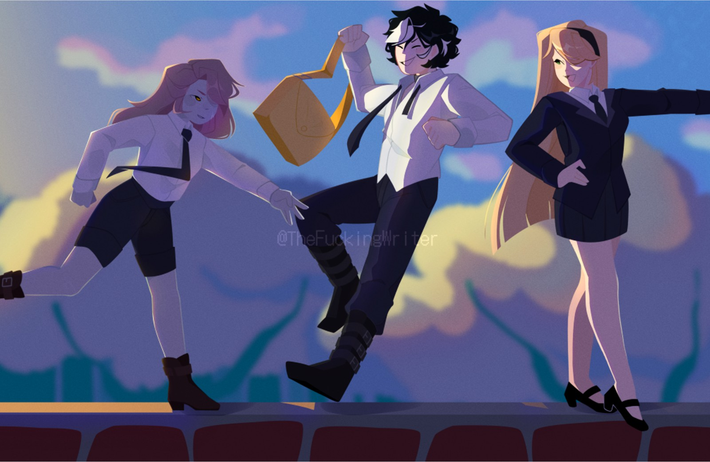
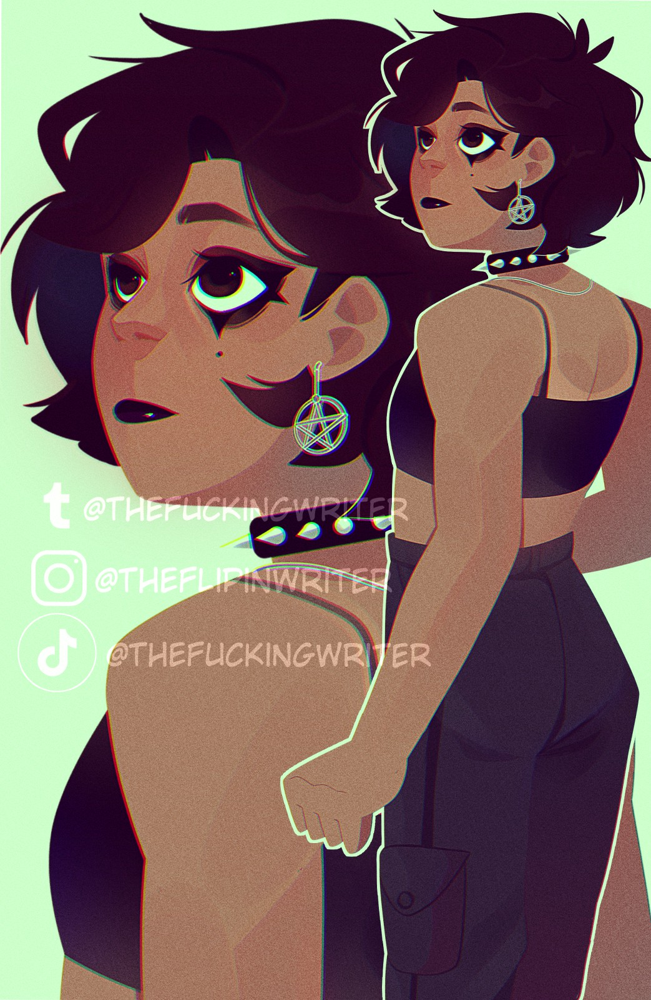
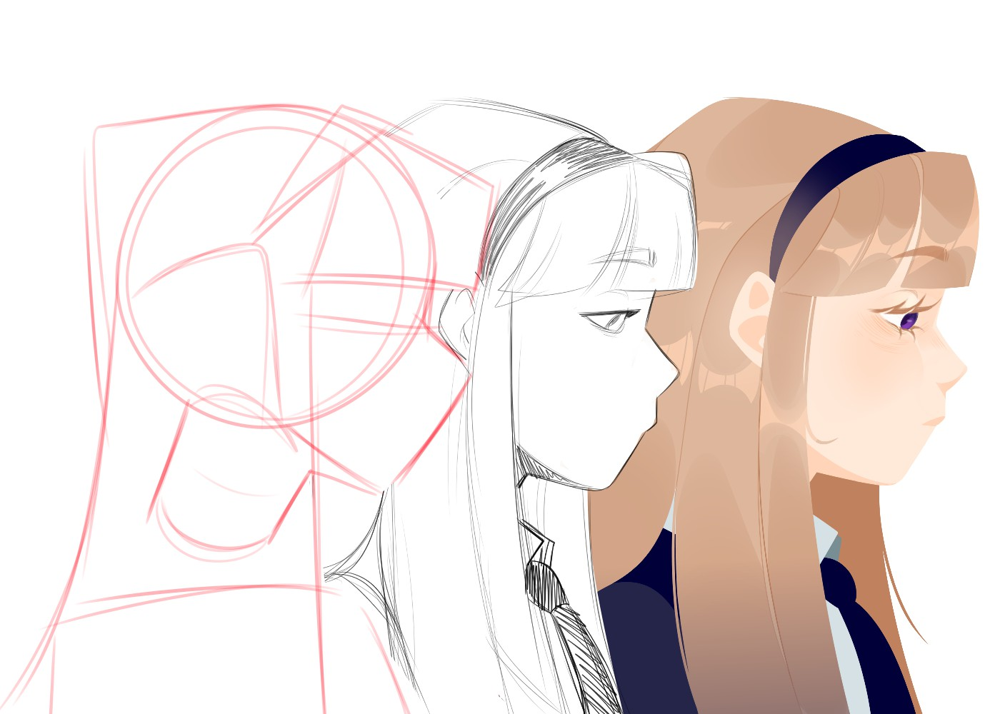

Del boceto a la vida
Bienvenido a este espacio artístico donde la ilustración y la creación visual se convierten en una forma de expresión personal.
¡Les habla La Escritora! Soy una artista y escritora independiente especializada en el diseño de personajes y la creación de historias de fantasía. Me he dedicado a escribir y dibujar desde muy pequeña, intentando imitar las películas e historias que mi padre y yo veíamos con tanta frecuencia. Ahora, el deseo de crear se ha convertido en una necesidad que no puedo abandonar, una adicción por la que estoy dispuesta a morir. ¡Acompáñenme a explorar algunos de mis trabajos! Sin miedo, no muerdo. 
Cada obra parte de una idea inicial, seguida de bocetos, exploración de formas, pruebas de color y desarrollo final. El proceso es más importante que el resultado final. Quizás sea un poco caótico, desordenado y estresante. Pero bueno, nunca se deja de aprender.
¿Te gusto esta probadita? encuentrame en tus lugares favoritos como
@thefuckingwriter